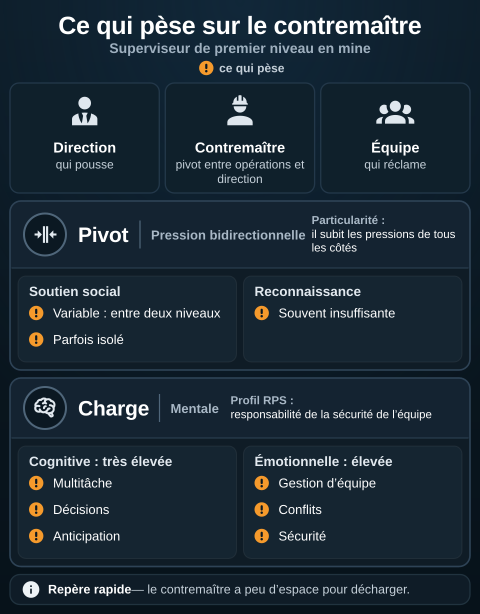
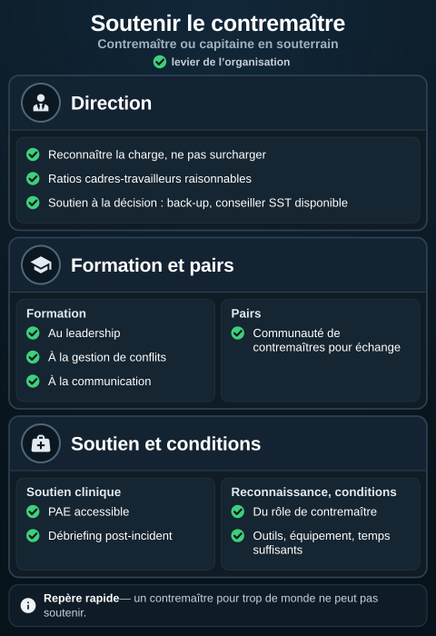

Contremaître ou capitaine, profil RPS
L'essentiel : Le contremaître (ou capitaine en souterrain) est le superviseur de premier niveau en mine. Profil RPS souvent intense : pression bidirectionnelle (direction qui pousse, équipe qui réclame), responsabilité de la sécurité de l'équipe, charge mentale élevée, latitude souvent moyenne. C'est l'un des postes les plus exposés au burnout en mine, mais aussi celui qui a le plus d'effet sur la santé psychologique de l'équipe.
Description du poste
Contremaître : responsable de la supervision directe d'une équipe de travailleurs miniers. Tâches
- Planification quotidienne du chantier
- Coordination de l'équipe
- Application des procédures de sécurité
- Communication avec la direction
- Gestion des situations imprévues
- Évaluation et soutien des travailleurs
- Reporting
Premier niveau d'encadrement, pivot entre opérations et direction.
Profil RPS
| Dimension | Profil typique |
|---|---|
| Charge cognitive | Très élevée (multitâche, décisions, anticipation) |
| Charge émotionnelle | Élevée (gestion d'équipe, conflits, sécurité) |
| Latitude décisionnelle | Moyenne (cadre dicté, mais marge sur l'exécution) |
| Soutien social | Variable : entre deux niveaux, parfois isolé |
| Reconnaissance | Souvent insuffisante |
| Pression | Bidirectionnelle (production + équipe) |
| Sécurité d'emploi | Généralement bonne |
| Perspectives | Vers surintendant, postes spécialisés |
Particularité : le contremaître subit les pressions de tous les côtés et a peu d'espace pour décharger.
{kind=link}

Toucher l'image pour l'agrandirCe qui pèse sur le poste dans le profil RPS de la page : une pression des deux côtés, des charges cognitive et émotionnelle élevées, un soutien variable et une reconnaissance souvent insuffisante. Ce sont des conditions du poste ; le schéma n’en mesure pas l’intensité.
Lire le schéma en texte
- Titre : « Ce qui pèse sur le contremaître », sous-titre « Superviseur de premier niveau en mine ». Infographie sur fond sombre.
- Sous le titre, la légende des couleurs : puces orange « ! », ce qui pèse. Le reste est en bleu-gris neutre.
- En haut, trois cartes à pictogramme blanc : « Direction », qui pousse ; « Contremaître », pivot entre opérations et direction ; « Équipe », qui réclame.
- Section « Pivot » (Pression bidirectionnelle) ; en tête : « Particularité : il subit les pressions de tous les côtés ». « Soutien social » : Variable : entre deux niveaux ; Parfois isolé. « Reconnaissance » : Souvent insuffisante.
- Section « Charge » (Mentale) ; en tête : « Profil RPS : responsabilité de la sécurité de l’équipe ». « Cognitive : très élevée » : Multitâche ; Décisions ; Anticipation. « Émotionnelle : élevée » : Gestion d’équipe ; Conflits ; Sécurité.
- En bas, « Repère rapide » : le contremaître a peu d’espace pour décharger.
D’après cette page (L’essentiel, Description du poste, tableau « Profil RPS » et « Particularité »), qui décrit un profil typique sans citer d’étude ; les RPS sont des conditions de travail : Définition des risques psychosociaux. Schéma de principe.
Effet sur l'équipe
Le contremaître est un modulateur clé des RPS de son équipe
| Comportement contremaître | Effet sur l'équipe |
|---|---|
| Présence terrain, écoute | Renforce le soutien social, réduit iso-strain |
| Reconnaissance régulière | Réduit ERI, motive |
| Communication claire | Réduit ambiguïté de rôle |
| Gestion juste des conflits | Climat sain |
| Décisions transparentes | Confiance |
| Disponibilité | Détection précoce des difficultés |
À l'inverse
| Comportement contremaître | Effet sur l'équipe |
|---|---|
| Absent ou distant | Iso-strain favorisé |
| Aucune reconnaissance | Désengagement |
| Communication peu claire | Tensions, erreurs |
| Favoritisme | Climat dégradé |
Implication : investir dans le contremaître est un multiplicateur d'effet sur la santé psychologique d'une équipe entière.
Soutenir le contremaître
{kind=link}

Toucher l'image pour l'agrandirLes leviers que la page propose pour soutenir le contremaître, avec les niveaux de son tableau (direction, formation, soutien clinique, pairs, reconnaissance, conditions). Ce sont des choix de l’organisation, pas des garanties d’effet.
Lire le schéma en texte
- Titre : « Soutenir le contremaître », sous-titre « Contremaître ou capitaine en souterrain ». Infographie sur fond sombre.
- Sous le titre, la légende des couleurs : coches vertes, levier de l’organisation. Le reste est en bleu-gris neutre.
- Section « Direction ». Reconnaître la charge, ne pas surcharger ; Ratios cadres-travailleurs raisonnables ; Soutien à la décision : back-up, conseiller SST disponible.
- Section « Formation et pairs ». « Formation » : Au leadership ; À la gestion de conflits ; À la communication. « Pairs » : Communauté de contremaîtres pour échange.
- Section « Soutien et conditions ». « Soutien clinique » : PAE accessible ; Débriefing post-incident. « Reconnaissance, conditions » : Du rôle de contremaître ; Outils, équipement, temps suffisants.
- En bas, « Repère rapide » : un contremaître pour trop de monde ne peut pas soutenir.
D’après le tableau « Soutenir le contremaître » et L’essentiel de cette page, qui ne cite pas d’étude ; PAE : Programme d’aide aux employés (PAE). Schéma de principe.
| Niveau | Action |
|---|---|
| Direction | Reconnaître la charge, ne pas surcharger |
| Direction | Ratios cadres-travailleurs raisonnables (un contremaître pour trop de monde ne peut pas soutenir) |
| Direction | Soutien à la décision (back-up, conseiller SST disponible) |
| Formation | Au leadership, à la gestion de conflits, à la communication |
| Soutien clinique | PAE accessible, débriefing post-incident |
| Pairs | Communauté de contremaîtres pour échange |
| Reconnaissance | Du rôle de contremaître spécifiquement |
| Conditions | Outils, équipement, temps suffisants |
Les contremaîtres présentent souvent des taux élevés de burnout et de troubles d'adaptation. Surveiller activement et soutenir.
Documents et outils
| Document | Type | Source |
|---|---|---|
| Description de poste type contremaître | Variables | Conventions minières |
| Programmes de formation au leadership minier | Variables | Centres de formation |
| MBI (épuisement professionnel), particulièrement pertinent | Instrument | Voir MBI, épuisement professionnel |
| Guides CCHST sur le rôle de superviseur | cchst.ca | |
| Programmes de soutien aux cadres | À développer | Selon contexte |
Voir le centre de ressources : 📁 Documents et outils.
Pour aller plus loin
Références
- Études sur les superviseurs de premier niveau en industrie : aucune référence précise n'est consignée dans ce vault.
- IRSST. Études sur le rôle des cadres miniers : aucun titre ni année n'est consigné dans ce vault.
Articles wiki connexes
Pages qui pointent ici (3)
- 🔤 Index alphabétique des articles SST psychosociale
- Milieu Minier et FIFO SST psychosociale
- Milieu Minier et FIFO SST psychosociale